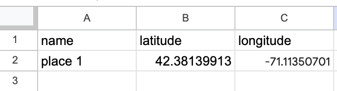
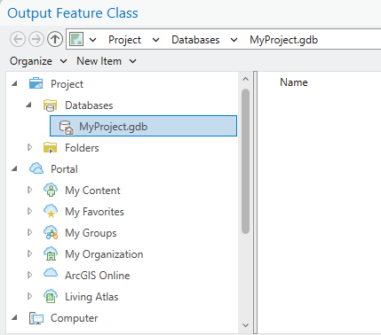

2. Coordinates
Learn how to create coordinate data compatible with GIS software.
- Learn where to find coordinate information for locations
- Learn how to format coordinates in a table so they can be opened in a map
- Learn how to import a table of coordinates into a GIS mapping interface
In class activity
- Open a new spreadsheet, for example in Excel, or quickly make a new Google Sheets by typing
sheets.newinto a browser.
- Create three header columns,
name,latitude, andlongitude.
- In a new tab, navigate to Google Maps.
- Find a location you are interested in mapping.
- In your spreadsheet, under the
namecolumn, give the location a name.
Right clickon the map in Google maps in the area you are interested in. A window with coordinates should pop up. Click on the coordinates, and they will copy to your clipboard.
- Paste the value into the spreadsheet, under the
latitudecolumn.
- You will need to edit the values so that the first number in the set of coordinates is under the
latitudecolumn, and the second number is inlongitudecolumn. Make sure to include the negative-symbol, if it exists, and remove the separating comma.

Properly formatted table.
- Repeat this process and add two more points, so you have three altogether.
- When you are finished entering your data, name your spreadsheet, and export it to a
.csvformat by clickingFile→Download→Comma Separated Values (.csv).
Demo and explore more
Sample data
You can download and explore sample datasets related to this activity from the workshop data homepage, hosted on the Open Science Framework (OSF.io)
- Visit the workshop data homepage.
- Click the three vertical dots icon and select
Download.

- The folder that downloads to your computer contains sample data from all the workshop activities. It is a zipped or compressed file. In order to use it, you will have to
double-clickit on Mac orright-click→ExtractorUncompresson a PC.
4. The sample data for this activity, Activity 2 is in the folder activity2_coordinates. In this folder you will find the following files:
example-coordinates.csvexample-coordinates.geojson
Follow-along steps
-
Import the coordinates csv,
example-coordinates.csv. From theMapmenu tab → Click the arrow below theAdd Dataicon to expand theAdd Data Menu→ Hover overPoints from Table→ SelectXY Table to Point. -
In the resulting
XY Table to Pointmenu, populate the parameters.Input Table= Click the folder icon and navigate intoComputerand then the folder where the downloaded data is saved. Select folderactivity2_coordinatesand then fileexample_coordinates.csv. The rest of the parameter fields should autopopulate.
Depending on how the x,y data is labelled in your table, you may need to manually designate which column maps to
X FieldandY Fieldrespectively.
Saving Geospatial Data for Future Use
A common question students ask GIS librarians is "How do I get my data out of ArcGIS Pro or share it with someone not using this software?"
You may notice that when using this import wizard (and may other dialog boxes in ArcGIS Pro), you are prompted to save files by default in your project's file geodatabase.

It is okay to use the file .gdb temporarily while working on your project. Keep in mind the suggestion to periodically archive any important files using legible, open data formats such as geopackage or geojson.
Next steps
- Learn how to export your data as geojson or geopackage from ArcGIS Pro.
- Use the Harvard Library GIS Data Management online guides for guidance on your project data.
- Set yourself up for success by booking a 45 minute instruction session with a GIS librarian to ensure your project structure and data practices are top notch.
- Right-click
example-coordinatesin the Layers pane →Zoom to layerto see the points better. - Right-click
example-coordinatesin the Layers pane →Attribute tableto view the data attributes. - Right-click
example-coordinatesin the Layers pane →Symbology→ ChangeSingle SymboltoUnique Values→ UnderField 1choosetype→Classify→OKto change the color symbols of the map. - Export your data as either geoJSON or geopackage. (Tutorial)
- Notice how you can drag the
.geoJSONfile directly into the ArcGIS window to display the geometry now (rather than use the XY Points to Table import wizard). This is because it is now stored as spatial data.